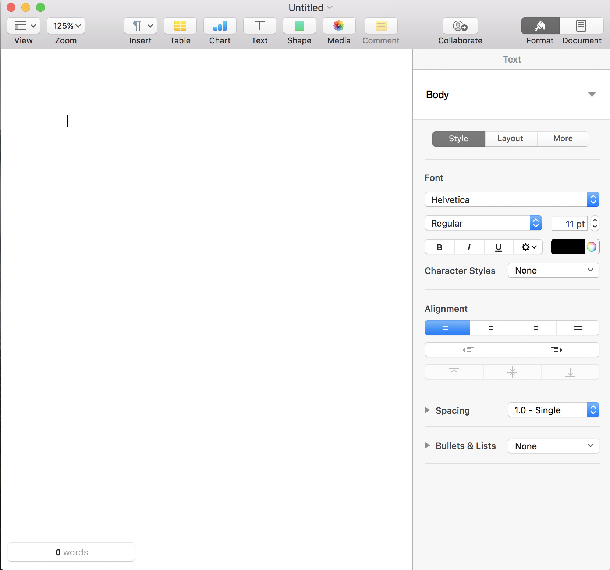
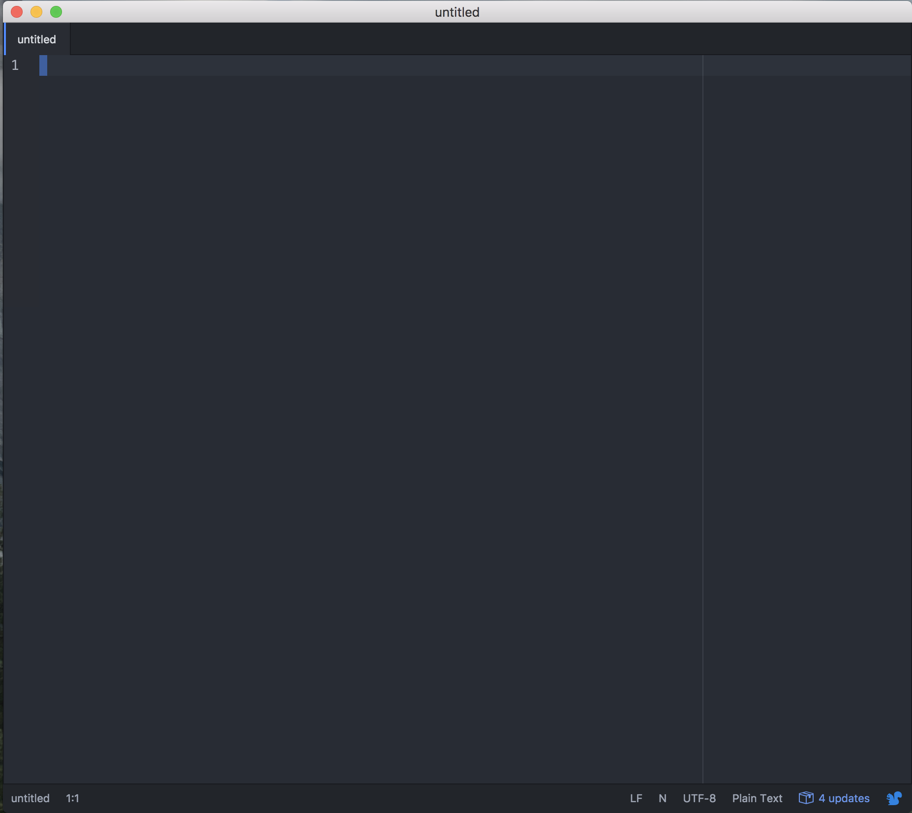
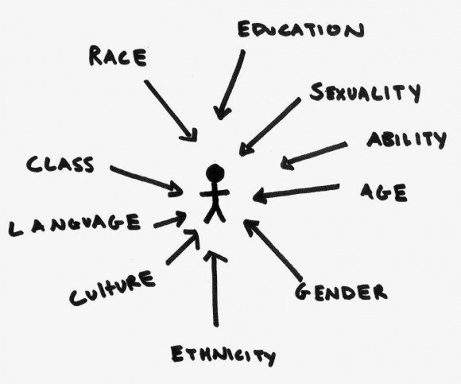

From Literature to Code
What studying literature taught me about how to write software
jrWebDev Meetup
13 November 2017
Literary Studies: An Overview
Typical Subdivisions
- British Literature

- U.S. Literature

- World Literature

- Critical Theory


Literary Studies: An Overview
Critical Theory
"Literary theory" is the body of ideas and methods we use in the practical reading of literature. [...] Literary theory is a description of the underlying principles, one might say the tools, by which we attempt to understand literature.-Vince Brewton
(Internet Encyclopedia of Philosophy)

Literary Studies: An Overview
But what's it really like?

- more time spent with secondary sources than primary texts
- lack of emphasis on grammar, language, & linguistics
- disciplinary overlap: philosophy, history, economics, gender studies, cultural studies
Literature & Software: A Comparison

Elements of Style
Organization, Structure, Style & (Changing) Conventions

SICP: The Elements of Programming


5 Skills for Writing Software
...I learned from studying literature
1.) How to Deal with Unfamiliar Jargon

2.) How to Structure and Organize a System

3.) How to Break a Concept into Smaller Parts


4.) How to Write Clearly


5.) How to Create Something on a Blank Screen


What Can Tech Learn from Literature?

Image Credit: Ashley J. Velazquez


intersectionality-focused analysis of human relations
10 Book Recommendations
- One Day of Life , Manlio Argueta
- A Fine Balance , Rohinton Mistry
- On Sal Mal Lane , Ru Freeman
- Waiting for the Barbarians , J. M. Coetzee
- Mrs. Dalloway , Virgina Woolf
- The Conversations of Cow , Suniti Namjoshi
- Masks , Fumiko Enchi
- Incidents in the Life of a Slave Girl , Harriet A. Jacobs
- Petals of Blood , Ngũgĩ wa Thiong'o
- The Edible Woman , Margaret Atwood